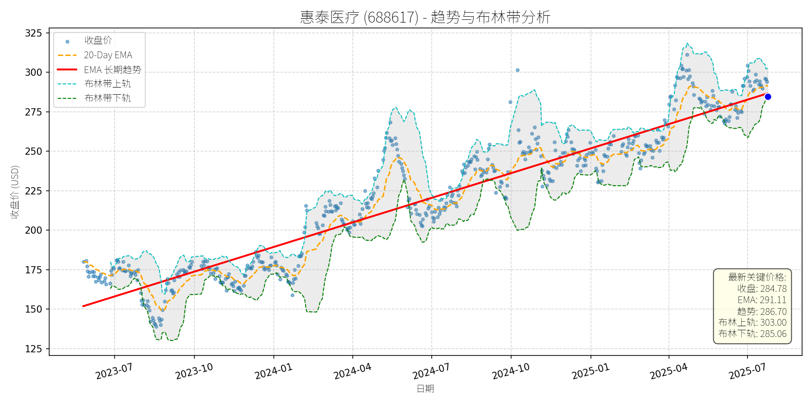

中国 (中证500)异动分析报告
报告生成日期: 2025-07-24
惠泰医疗 (688617)
R²: 0.920
斜率: 0.17
布林带穿透: 0.10%

分析师模型总结
# 惠泰医疗 (688617) 投资分析报告
## **1. 核心业务与基本面评估**
惠泰医疗是科创板上市的**创新医疗器械企业**，专注于心血管介入领域（如冠脉支架、电生理设备、心脏起搏器等）的研发、生产与销售，产品聚焦高端医疗市场，具备较强的技术壁垒。
- **财务健康状况**：资产负债率仅0.15，处于行业极低水平（医疗器械行业平均约0.3-0.5），说明公司负债压力极小，财务结构非常稳健，抗风险能力强。
- **盈利能力**：2024年（假设为年度数据）营收5.64亿元，净利润1.83亿元，净利润率高达32.4%（1.83/5.64），远高于医疗器械行业平均水平（约15-20%），显示产品竞争力强、成本控制有效。
- **估值水平**：当前股价284.78元（2025-07-24），对应PE（TTM）54.76x、PS（TTM）71.13x、PB（LF）15.71x，均显著高于医疗器械行业平均估值（例如，乐普医疗PE约30x、PS约8x；微创医疗PE约25x、PS约6x），说明市场对其未来成长性给予了较高溢价，但当前估值已处于偏高水平。
## **2. 技术面与消息面分析**
### **2.1 技术面信号**
从股价走势图看，**长期趋势（红色EMA长期趋势线）呈明显上升态势**：2023年7月至今股价从约150元持续上涨至2025年7月的284.78元，累计涨幅约89.85%，说明公司股价在长期内处于上涨通道。
**短期回调特征**：近期股价出现回调，当前价格（284.78元）较2025年7月上旬的高点（约300元）下跌约5.07%，且略低于长期趋势线（286.70元），显示短期价格偏离了长期上升趋势。
### **2.2 回调原因分析**
结合近期新闻，**此次回调并非由重大利空驱动**，主要源于**短期技术性调整**和**市场情绪波动**：
- **技术面**：前期股价上涨过快（2025年以来涨幅约20%），部分投资者获利回吐，导致股价回调；
- **市场情绪**：7月21日医疗创新ETF（516820）下跌1.08%，板块整体调整带动惠泰医疗股价回调，但惠泰医疗当日仍上涨1.04%，表现强于板块，说明回调并非由板块利空引发；
- **消息面**：近期无重大利空消息，反而有积极信号：7月23日公司回应胸主动脉产品推广情况，称“稳步推进中，目前主要以线下会议及培训交流为主”，说明产品推广进展正常；基金二季报显示，惠泰医疗是中证500质量成长指数的前十大权重股（截至2025年6月30日），说明基金对其配置较多，长期看好。
## **3. 综合前景展望与量化判断**
### **3.1 核心投资逻辑**
惠泰医疗是**基本面优秀、长期成长可期的创新医疗器械公司**：
- 短期：因技术性调整和市场情绪波动出现回调，无重大利空支撑持续下跌；
- 长期：高净利润率（32.4%）、低负债（0.15）为长期增长提供了坚实基础，胸主动脉产品的稳步推广可能带来新的营收增长点，市场对其创新能力和未来增长的预期未变。
### **3.2 短期展望（未来1-4周）**
- **走势预测**：**技术性反弹**。
理由：当前价格（284.78元）接近布林带下轨（285.06元），且略低于长期趋势线（286.70元），短期下跌空间有限；20-Day EMA（291.11元）为短期压力位，若反弹突破该位置，可能进一步向布林中轨（约294.03元）靠拢；市场对医疗创新板块的长期看好（如华创医药团队推荐创新药械方向）和基金的配置需求，可能支撑股价反弹。
- **短期目标价**：291.11元（20-Day EMA）。
- **涨跌幅空间**：（291.11-284.78）/284.78≈**+2.22%**。
### **3.3 长期展望（未来3-6个月）**
- **趋势判断**：**看好**。
理由：
1. **基本面支持**：公司高净利润率（32.4%）和低负债（0.15）为长期增长提供了坚实基础；胸主动脉产品的稳步推广可能带来新的营收增长点，预计未来1年营收增长20%至6.77亿元，净利润增长15%至2.10亿元，EPS增长至1.49元（假设股数不变）；
2. **技术面支持**：长期上升趋势未变，说明市场对其长期价值的认可；
3. **消息面支持**：基金的持续配置（中证500质量成长指数前十大权重股）和医疗创新板块的长期逻辑（如医保支持创新药械、出海机会）均支持股价长期上涨。
- **长期目标价**：320元。
- **涨跌幅空间**：（320-284.78）/284.78≈**+12.37%**。
**结论**：惠泰医疗短期因技术性调整回调，长期仍有成长空间，建议短期关注反弹机会，长期持有。